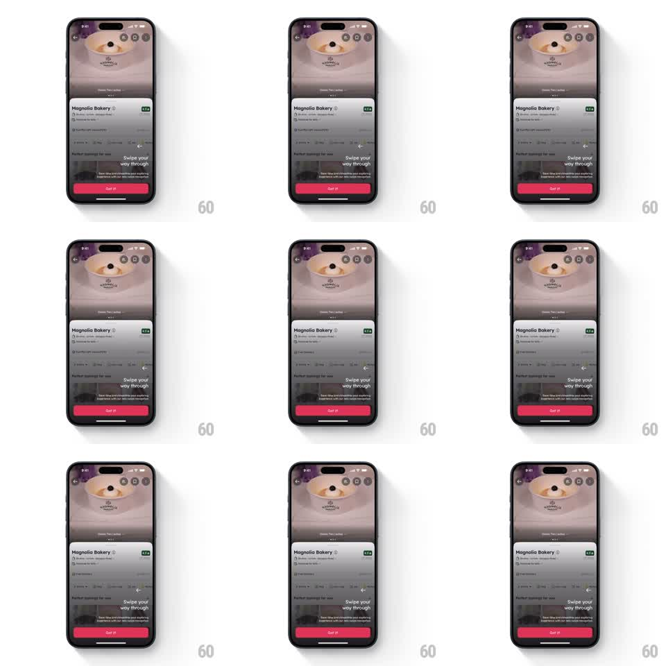

Media
Frame-by-frame

Rebuild this interaction 1:1: Zomato's first-run tooltip - a dim overlay with a "Swipe your way through" tooltip card over the restaurant page; tap Got it and the card slides down and away as the page returns to life.

Rebuild this interaction 1:1: Zomato's first-run tooltip - a dim overlay with a "Swipe your way through" tooltip card over the restaurant page; tap Got it and the card slides down and away as the page returns to life. ## Integration Integration: stack-agnostic spec - springs given as stiffness/damping, timed motions as duration + curve; map every value to your framework and animation library of choice. ## Scene Restaurant page (hero photo, name, rating, offer rows) frozen under a full-screen dim. Centered above the dim: a tooltip card with swipe-hint illustration, "Swipe your way through" copy, and a pink "Got it" button. ## Motion spec Pattern: tooltip dismissal, ~450ms. - Entrance (on first open): overlay fades in (250ms), tooltip card slides up from the lower third with a spring (~380/20) and fades in. - Tap Got it: the card slides down ~120px while fading out (300ms, ease-in), the dim lifts over the same window. - The page beneath is fully interactive the moment the overlay is gone - no residual scrim. - One-shot: the tooltip never reappears after dismissal. ## Calibration - Card exits downward, the way it came... actually it exits downward regardless - the exit mirrors a sheet being dropped, not raised. - Keep the dim at ~60%: the page must stay recognizable behind it. ## Reduced motion Crossfade card and overlay out (200ms). ## Don't miss - The Got it button is the only way out - tapping the dim does nothing, so the hint is always read deliberately. - Show the tooltip exactly once per install; re-showing it on every visit trains users to dismiss without reading.